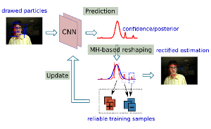
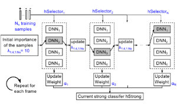
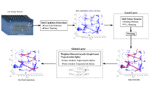
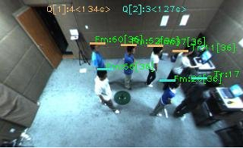
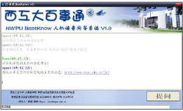
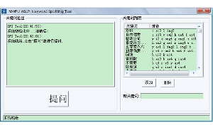

Projects
| 2014.07-2015.02 | Online Object Tracking Based on Convolutional Neural Networks (CNNs) |
|  | We propose a robust online tracking approach for general objects with a convolutional neural network (CNN) based appearance model. To alleviate the problems incurred by immediately using CNN for online tracking task, we presented a re-sampling method over particles with a variation of Metropolis-Hastings algorithm to gain better posteriors, and draw a set of more reliable training samples to feed CNN at the same time. |
| 2013.06-2014.03 | Object Tracking using Deep Learning Technology |
|  | We tackle the generic object tracking problem by a novel approach that incorporates a deep learning architecture with an on-line AdaBoost framework. Inspired by its multi-level feature learning ability, a stacked denoising autoencoder (SDAE) is used to learn multi-level feature descriptors from a set of auxiliary images. |
| 2012.04-2012.12 | Ball Trajectory Tracking in Tennis Game Video |
|  | A two layered data association method to improve the robustness of tennis ball tracking. At the local layer, a shift token transfer method is proposed, based on shift window processing, to generate a set of short trajectories or ``trajectorylets''. At the global layer, a unique ball trajectory is obtained by applying a dynamic programming based splice method to a directed acyclic graph consisting of trajectorylets. |
| 2011.05-2011.12 | Towards a Queue-Aware ATM: Monitoring and Managing Queues in front of ATMs |
|  | We apply a real-time object tracking approach based on a stereo camera placed in front of ATM machines. With the aid of camera’s real-time monitoring, tracking and counting, a queue-aware system is implemented to provide each arriving customer a suggested queue number and estimated corresponding queuing time. |
| 2010.09 | Keyword Spotting based Real-time Dialog System |
|  | This is a real-time dialog system implemented with keyword spotting approach so as to receive spontaneous speeches from general users. The question-set is predefined by user and can be changed easily, so it's applicable to many specific scenarios with limited question-set running on PC. |
| 2010.09 | Keyword Spotting Tool |
|  | A Chinese keyword spotting tool which keywords set can be online defined (add/remove) by users easily. This tool receives a spontaneous speech from user via microphone and picks out all keywords defined in the speech. This tool embeds a speech recognition component and all keywords are presented in term of text and Chinese PinYin. |